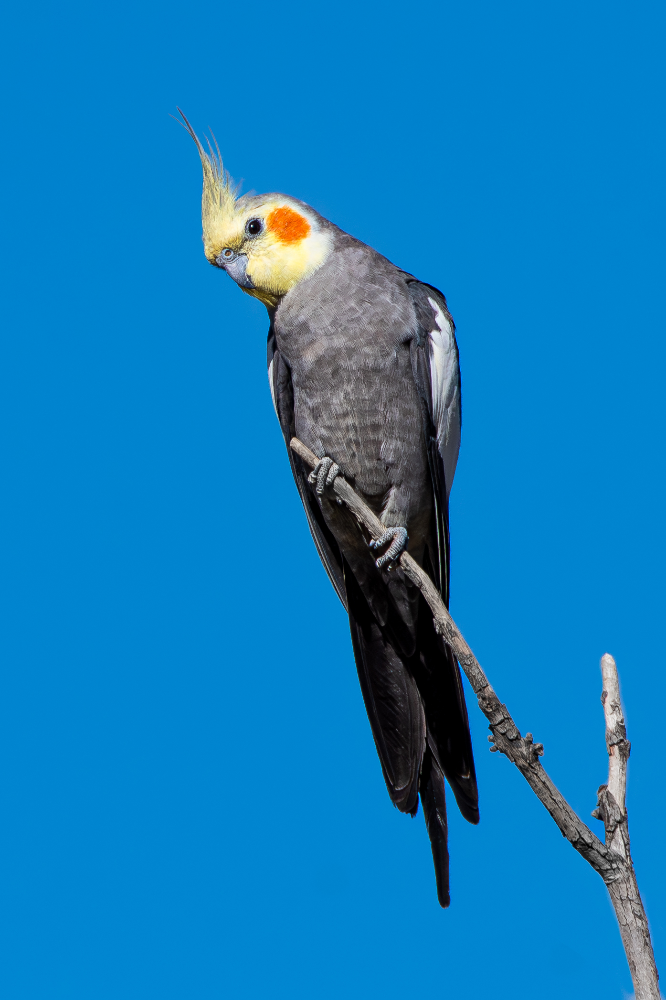
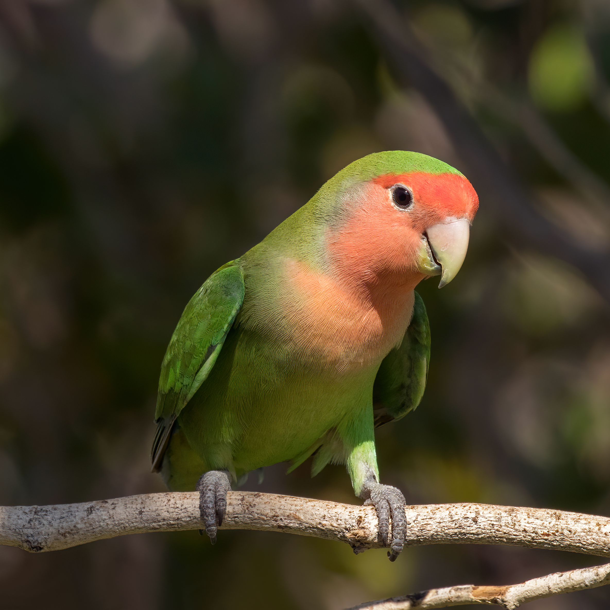
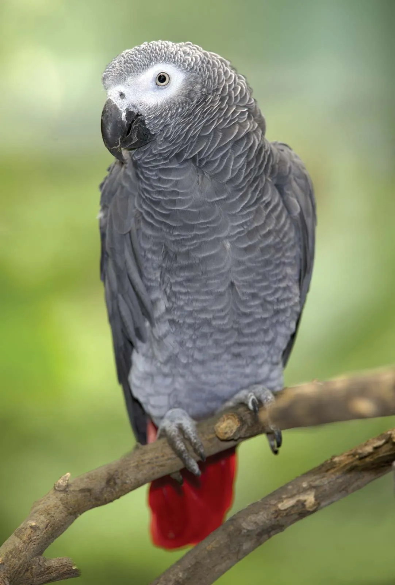

Small and playful parrots known for their expressive head crests and gentle, affectionate personality.
Learn more
Vibrant green birds famous for their distinctive neck rings, high intelligence, and talking ability.
Learn more
Charming little parrots celebrated for their vivid colors and the strong lifelong bonds they form with partners.
Learn more
Renowned as one of the most intelligent bird species, capable of advanced speech and complex problem-solving.
Learn more